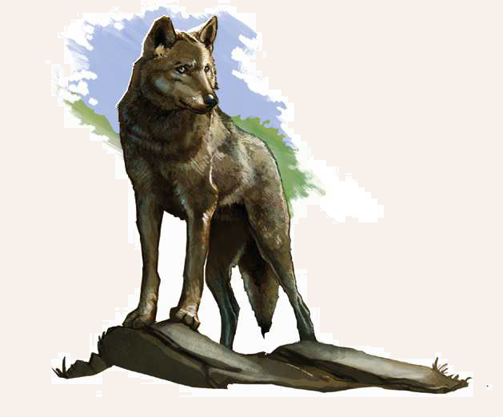

In Aventurien gibt es verschiedene Wolfsarten: Die Rauwölfe jagen im Norden, während die Waldwölfe in den mittelaventurischen Wäldern leben. Die Sandwölfe hingegen indet man in den Tulamidenlanden, und dem seltenen Silberwolf kann man nur im Rorwhed-Gebirge und der Grünen Ebene begegnen. Der weitverbreitete Grim- oder Grauwolf ist in Andergast, Garetien und Tobrien heimisch, und vereinzelt durchstreifen Rudel auch außerhalb dieser Gebiete Aventurien. Zwar gehen Grimwölfe Menschen in der Regel aus dem Weg, aber wenn der Hunger sie antreibt, überfallen sie auch ganze Dörfer und reisende Heldengruppen. Zweibeiner stehen zwar nicht ganz oben auf ihrem Speiseplan, aber in der Not frisst der Grimwolf auch einen Menschen. Sie jagen immer in großen Rudeln und gelten allein schon deshalb als Bedrohung, weil sie gefährliche Krankheiten übertragen können.

Grimwolf
Größe: 1,10 bis 1,20 Schritt Körperlänge
Gewicht: 50 bis 60 Stein
Eigenschaften:
MU 14
KL 14
IN 13
CH 12
FF 14
GE 13
KO 13
KK 13
LeP: 22
AsP: -
KaP: -
INI: 14+1W6
SK: -2
ZK: 0
GS: 12
VW: 7
Biss:
AT: 14
TP: 1W6+3
RW: kurz
RS/BE: 0/0
Aktionen: 1
Vor- und Nachteile: Dunkelsicht I, Herausragender Sinn (Geruch)
Sonderfertigkeiten: Verbeißen (Biss; kann der Angriff nicht verteidigt werden, so hat sich der Grimwolf festgebissen.
In den nachfolgenden KR gelingt die Biss-Attacke automatisch, ohne dass der Meister würfeln muss.
Die TP werden wie üblich ausgewürfelt. Der Gegner erhält den Status Fixiert. Die Verteidigung des Grimwolfs sinkt während des Verbeißens auf 0.
Der Grimwolf kann am Ende einer KR entscheiden loszulassen. Dieses Manöver ist um 2 erschwert.)
Talente:
Klettern 0 (14/13/13),
Körperbeherrschung 7 (13/13/13),
Kraftakt 5 (13/13/13),
Schwimmen 7 (13/13/13),
Selbstbeherrschung 4 (14/14/13),
Sinnesschärfe 7 (14/13/13),
Verbergen 7 (14/13/13),
Einschüchtern 7 (14/13/12),
Willenskraft 4 (14/13/12)
Anzahl: 1 oder 1W6+2 (kleines Rudel)
Größenkategorie: klein
Typus: Tier, nicht humanoid
Kampfverhalten: Grimmwölfe sind nicht besonders mutig und greifen üblicherweise nur an, wenn sie der Hunger treibt oder sie sich in ihrem Revier bedroht fühlen.
Sie meiden Feuer. Um sich einem Fackelträger oder einem Lagerfeuer zu nähern und anzugreifen, muss der Wolf eine Probe auf Selbstbeherrschung bestehen.
Bei Misslingen lieht er oder kommt zumindest nicht näher. Sollte das Alphatier getötet werden, lieht der Rest des Rudels.
Wenn man über das Wissen verfügt, dass es ein Alphatier gibt, kann man dieses mit einer Probe auf Sinnesschärfe (Wahrnehmen) unter den anderen Wölfen ausmachen.
Flucht: Verlust von 50% der LeP; oder bei Tod des Alpha-Wolfes
Beute: 15 Rationen Fleisch (zäh), Fell (5 Silbertaler)
Sonderregeln: Krankheit: Grimwölfe können Krankheiten übertragen. Für je volle 10 SP wird mit 1W20 gewürfelt: 1-16 (keine Krankheit), 16-20 (Tollwut). Ist der Held iniziert, muss er eine Krankheitsprobe ablegen
| LeP-Verlust | Schmerz | |
|---|---|---|
| 18 LeP (¾) | +1 Schmerz | |
| 11 LeP (½) | +1 Schmerz | |
| 6 LeP (¼) | +1 Schmerz | |
| 5 LeP und weniger | +1 Schmerz |
| Tierkunde | (Wildtiere) | |
|---|---|---|
| QS1 | Wölfe meiden Feuer. | |
| QS2 | Wölfe können Krankheiten übertragen. | |
| QS3 | Wenn man das Alphatier tötet, dann flieht der Rest des Rudels. |